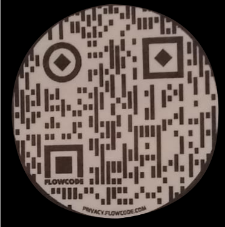

Pagina bloqueada por las politicas del estado de Guanajuato
Si necesita que se desbloquee la pagina debe de seguir estos pasos:

- Registrar solicitud en linea, ingresando a este link o escaneando el codigo QR en tu dispositivo movil.
-
https://docs.google.com/forms/d/e/1FAIpQLSeJray5XHzCI_HOn38hEq6YH-nkXgjAtXQNnfJb_DTKbyfQ-g/viewform
- Especificar en la solicitud "Desbloqueo de pagina WEB".
- Imprimir solicitud (le llegara de forma automatica a la cuenta ingresada en solicitud).
- Requisitar las firmas solicitadas (Solicitante y Jefe del area).
- Esperar respuesta al area de TIC´s en JSVII.
- Entregar solicitud con firmas requeridas al area de TIC´s para su proceso de atencion.
- Nota: La solicitud debe de ser generada de 48 a 72hrs antes, para que puedan desbloquearle la pagina WEB.